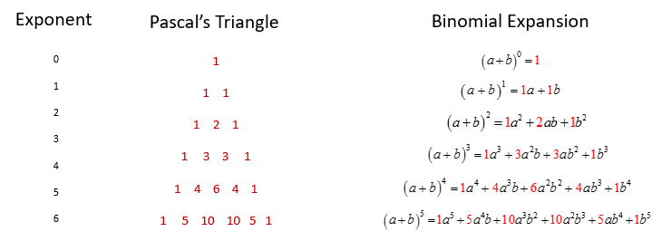
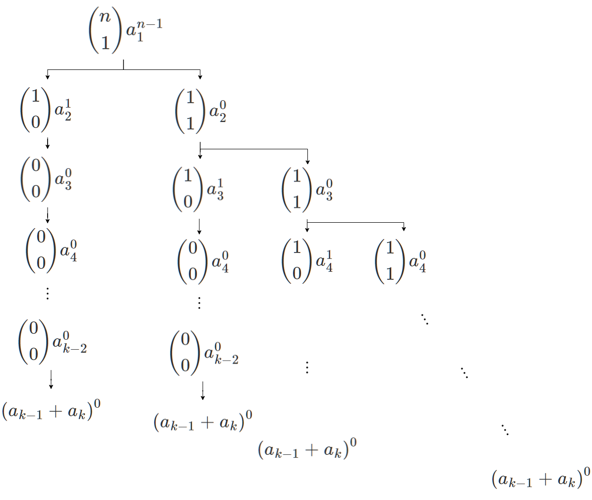
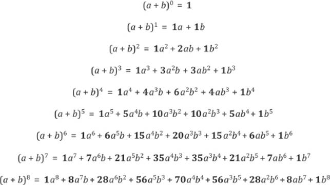
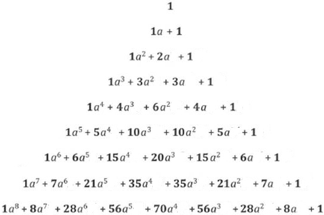
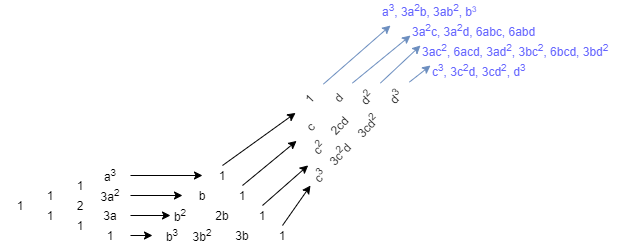

Generalisation of the Pascal’s Triangle to multinomials through multiple triangles in a novel combination
This project is under development.
Please note that this article is a draft and is open to suggestions and constructive criticism.
Introduction
The Pascal's Triangle by itself is a Mathematical Marvel. We have been using this simple triangle to examine a wide variety of patterns - including coefficients of binomial expansions.
The binomial expansion of $(a+b)^n$ can be summarised as
\[ (a+b)^n = \sum_{i=0}^{n}\binom{n}{i} a^{n-i} b^i \] There are numerous generalisations of the binomial theorem using modified Pascal's triangles - like simplices. Through this paper, I wish to introduce another generalisation which is based on a combination of multiple pascal's triangles.
Where this started
I remember watching a TedEd video about the Pascal's triangle, when I was in Grade 10. At the end, the narrator pointed out that mathematicians are still looking for generalisations of the pascal's triangles. This was interesting, because the first thought which struck my mind after reading about the Binomial Theorem was exactly this - do we have a multinomial generalization too?
Applying the Binomial Theorem to Multinomials
Let's begin with an arbitrary expansion,
\[ (a_1 + a_2 + a_3 + ... + a_k)^n \]
By grouping the terms as
\[ (a_1 + (a_2 + a_3 + ... + a_k))^n \]
we can easily expand the expression using the binomial theorem. It should be noted that the grouping could be done in any manner, and that my choice of grouping retains generality.
The first term of this expansion is therefore,
\[\binom{n}{0}a_{1}^n (a_2 + a_3 + ...)^0\] \[= \binom{n}{0}a_{1}^n (\binom{0}{0}a_{2}^0 (a_3 + a_4 + ...)^0)\] \[= \binom{n}{0}a_{1}^n (\binom{0}{0}a_{2}^0 (\binom{0}{0}a_{3}^0(...\binom{0}{0}a_{k-2}^0(a_{k-1} + a_{k})^0))^0)\]
The only purpose of fully expanding this expression is to draw a flowchart of the following manner, where each arrow or connection denotes a multiplication operation.
\[\binom{n}{0}a_{1}^n\rightarrow\binom{0}{0}a_{2}^0\rightarrow \binom{0}{0}a_{3}^0\rightarrow...\rightarrow\binom{0}{0}a_{k-2}^0\rightarrow(a_{k-1} + a_{k})^0 \]
Now, the second term of the expansion can be written as
\[\binom{n}{1}a_{1}^{n-1} (a_2 + a_3 + ...)^1\] \[= \binom{n}{1}a_{1}^{n-1}(\binom{1}{0}a_{2}^1 (a_3 + a_4 + ...)^0 + \binom{1}{1}a_{2}^0 (a_3 + a_4 + ...)^1)^1\]
Following the convention established earlier, the flowchart for this term can be drawn in the manner shown below.
The complexity of these graphs increases exponentially as we approach higher terms. Thus, we may choose to infer our pattern from the above terms.
The Triangles
Before combining all the flowcharts into our pattern, we will make the following observations.
For any non-negative integer $n$, we can use the coefficients from the original pascal's triangle to depict $(a+b)^n$ in the following way, drawing up to $n$ rows.
Naturally, for $b =1$, i.e., for $(a+1)^n$ the triangle looks like this.
Combining the Flowcharts
We are now ready to combine the flowcharts that we made in the previous section.
In general, for the expansion of $(a_1 + a_2 + a_3 + ... + a_k)^n$, where $n$ and $k$ are non-negative integers and $k>0$, we are required to draw $k-1$ triangles in the following pattern. The first triangle is of the form $(1 + a_1)^n$, the next $k-3$ triangles are of the form $(x_{i}+1)^n$ , for $i= 2, ..., k-2$, and the last triangle is of the form $(x_{k-1} + x_k)^n$, according to the above observations.

Again, the arrows denote multiplication here. The rectangles in the figure show the groups in which numbers are multiplied, and while multiplying in groups, the multiplication is done element-wise. The sum of the final expressions is the complete expansion of our multinomial.
An Example
Here is an example employing these Multinomial Triangles for expanding the multinomial, $(a+b+c+d)^3$.
Indeed, the correct expansion is $a^3$ $+ 3a^{2}b$ $+ 3ab^2$ $+ b^3$ $+ 3a^{2}c$ $+3a^{2}d$ $+3ab^2$ $+ 6abc$ $+ 6abd$ $+ 3ac^2$ $+ 6acd$ $+ 3ad^2$ $+ 3bc^2$ $+ 6bcd$ $+ 3bd^2$ $+c^3$ $+3c^{2}d$ $+ 3cd^2$ $+ d^3$.
Credits
I wish to thank the following people for providing their valuable inputs to this project in the form of ideas and feedback.
- Mr. Chirag Mittal, Aakash Institute
- Mrs. Kameshwari, Vishwa Bharati Public School, Noida
I would also like to thank my parents for providing me continual support during this endeavour.